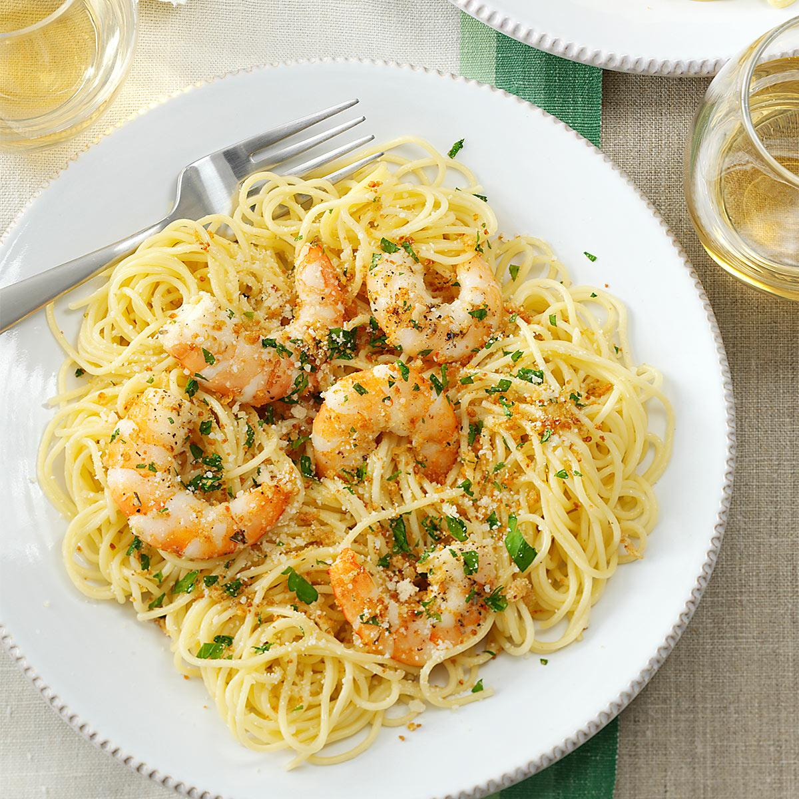

Shrimp Scampi

Description
This classic recipe makes a simple garlic, white wine and butter sauce that goes well with a
pile of pasta or with a hunk of crusty bread.
Ingredients
- 1 lb linguini
- 4 tablespoons butter
- 4 tablespoons extra-virgin olive oil, plus more for drizzling
- 2 shallots, finely diced
- 2 cloves garlic, minced
- 1 pound shrimp, peeled and deveined
- Kosher salt and freshly ground black pepper
- 1/2 cup dry white wine
- Juice of 1 lemon
- 1/4 cup finely chopped parsley leaves
- Pinch red pepper flakes, optional
Steps
- For the pasta, put a large pot of water on the stove to boil. When it has come to the boil, add a couple of
tablespoons of salt and the linguini. Stir to make sure the pasta separates; cover. When the water returns to
a boil, cook for about 6 to 8 minutes or until the pasta is not quite done. Drain the pasta
- Meanwhile, in a large skillet, melt 2 tablespoons butter in 2 tablespoons olive oil over medium-high heat.
Saute the shallots, garlic, and red pepper flakes (if using) until the shallots are translucent, about 3 to 4
minutes. Season the shrimp with salt and pepper; add them to the pan and cook until they have turned pink, about
2 to 3 minutes. Remove the shrimp from the pan; set aside and keep warm. Add wine and lemon juice and bring to a
boil. Add 2 tablespoons butter and 2 tablespoons oil. When the butter has melted, return the shrimp to the pan along
with the parsley and cooked pasta. Stir well and season with salt and pepper. Drizzle over a bit more olive oil and
serve immediately.